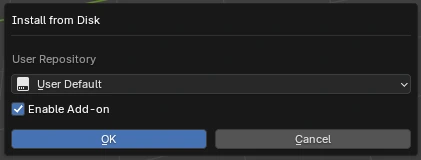

Математический шейдер лица
Модульный и легко модифицируемый шейдер лица, построенный на математике

Простой и мощный Minecraft риг для Blender 4.2+.
Создан для тех, кто ценит скорость и удобство настройки.
Модульный и легко модифицируемый шейдер лица, построенный на математике

Опциональное расширение позволяет добавить Just Rig в сцену за пару кликов через удобный GUI без ручных действий.
Свободное использование в любых анимациях.
Разрешено модифицировать риг под свои задачи.
При использовании в анимациях необходимо указать автора рига (Aspirata). В артах можно не указывать, но всё ещё желательно